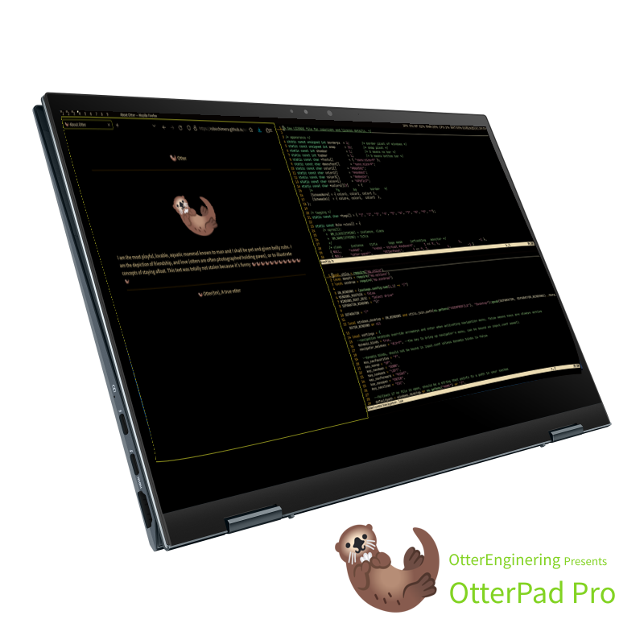
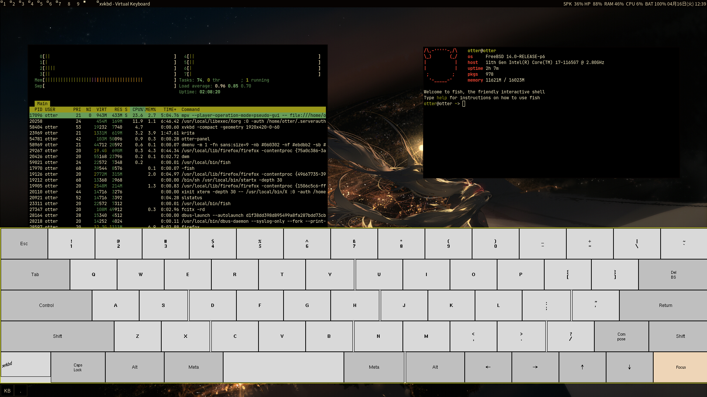

<!DOCTYPE HTML>
<head>
		<meta charset="utf-8">
		<meta name="viewport" content="width=device-width,initial-scale=1.0">
		<title>About Otter</title>
		<link rel="stylesheet" href="../css/styles.css">
		<link href="data:image/svg+xml,<svg xmlns='http://www.w3.org/2000/svg' viewBox='0 0 18 18'><text y='14'>🦦</text></svg>" rel="icon">
</html>
	<body>
		<div id="head">
				<a href="../index.html">
						<p class="logo">🦦</p>
						<p> Otter </p>
						<p class="logo">🦦</p>
				</a>
				<a href="">
						<p class="logo">🦦</p>
						<p> I LOVE BSD :DD</p>
						<p class="logo">🦦</p>
				</a>
		</div>
		<div id="body">
			<p class="logo">🦦</p>
			<p>
				Otter uses FreeBSD for everything including mah otterpad pro and mah otterstation and otterdex :D if ya don't know what an otterpad pro is then you aren't ottery enough so let me show you
			</p>
			
			<p>
				The Otter(TM)Pad Pro(TM) is more than what it looks like, it is a complete OtterStation, With the best screen for looking at otter pics, yes, this otterpad comes with an O(tter)LED lighty up thingy
			</p>
			
			<p>
				Yeah? But what about the fluffyware? Well, otter has swimmed through the open sea and has found the best combination of good and good. Otter tries to use free and open-source fluffyware that is portable (when possible). While trying to have some personality.<i>🦦🦦🦦🦦🦦🦦🦦🦦🦦🦦🦦🦦</i>
			</p>
			<h1>What even is this website lol</h1>
		</div>
		<div id="tail">
			<p>&copy; 🦦 Otter(tm), A true otter</p>
						
			<div class="sponsors">
					<br>
					<br>
					
					
					
					
					
					
					
					
					
					
					
					
					
					
					
					
					
					
					
					
					
					
					
					
					
					
					
					
					
					
					
			</div>
		</div>
	</body>
</html>
